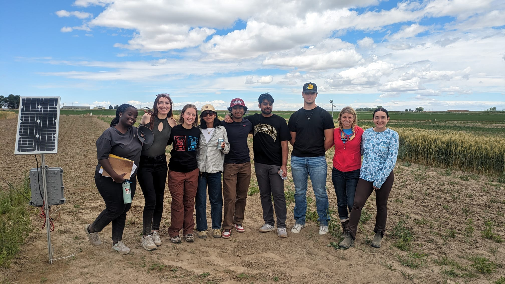
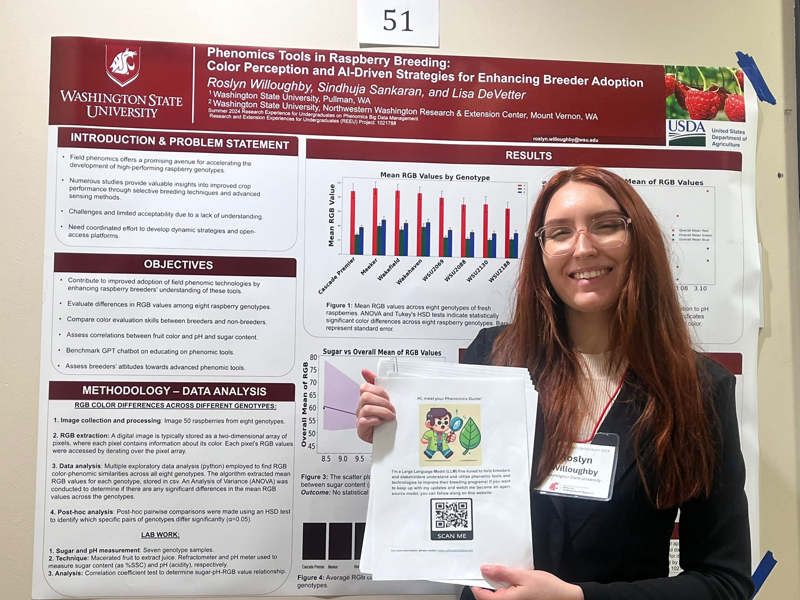

- Please find my current resume here.
- Check out my recent project: SITE — Sustainable Infrastructure Trade-Off Evaluation
Bio
I’m Roslyn, a recent graduate from Washington State University, where I combined training in social psychology, neuroscience, programming, and advanced statistics. My research focuses on how policy decisions shape the way AI systems are developed, evaluated, and deployed in society. My research projects include:
- Designing frameworks to evaluate sustainable limits of AI infrastructure across regions
- Using machine learning to uncover patterns in health, agriculture, and social data
- Studying how AI systems influence human judgment in high-stakes decision-making contexts
News
- [March 23, 2026] - Accepted into Columbia Arts & Sciences Masters Program in Quantitative Methods in the Social Sciences (QMSS) for Fall 2026!
- [December 5, 2025] - Accepted into Central European University (CEU) for a Masters in Social Data Science with scholarship!
- [Dec 2, 2024] - Selected to be a delegate for the Harvard Project for Asian and International Relations (HPAIR) Conference!
- [Aug 24] - Presented my work titled "Phenomics Tools in Raspberry Breeding: Color Perception and AI-Driven Strategies for Enhancing Breeder Adoption" with 70 other research interns. Thankful to Prof. Lisa DeVetter and Prof. Sindhuja for the opportunity. [POSTER]
- [July 24] Thrilled to be a part of the team to teach programming and embedded systems to young native american students at Washington State University. [LINK]
- [June 10] - I am thankful to Washington State University for recognizing me on the President's Honor Roll for 2024.
- [April 24] - Received a Data Science internship offer through WSU! Excited to contribute to the Phenomics Lab.
- [Dec 23] - Got the 2023 McCroskey Scholar Award at Washington State University!


Projects
Research
Coding Neural Networks from scratch
Contact 
You can also get in touch with me via email (willoughbyroslyn@gmail.com)